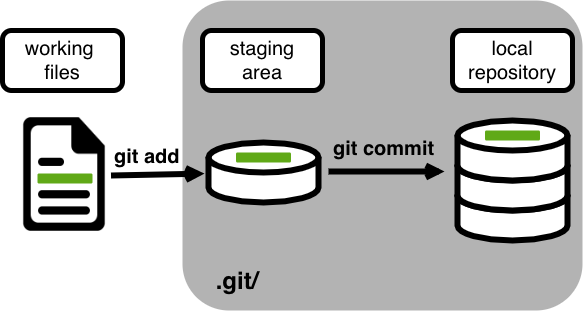
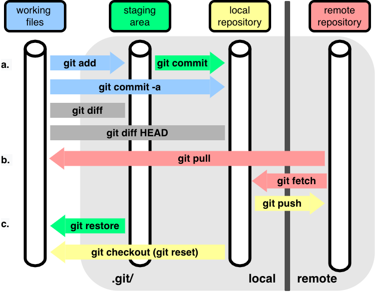

3. Version Control
If I could turn back time
Cher, If I Could Turn Back Time 1989
Version control tracks changes to your files, lets you undo mistakes, and makes collaboration easy. Once you start using it, you’ll wonder how you worked without it!
This tutorial was “stolen” from the Version Control with Git by The Software Carpentries. They have good educational resources on different topics for software practices in science res
Summary

Jimmy and Alfredo have been hired by Ratatouille restaurant to investigate if it is possible to make the best recipes archive ever. They want to be able to work on indexing the prices at the same time, but they have run into problems doing this in the past. If they take turns, each one will spend a lot of time waiting for the other to finish, but if they work on their own copies and email changes back and forth things will be lost, overwritten, or duplicated.
Version control is better than mailing files back and forth:
Nothing that is committed to version control is ever lost, unless you work really, really hard at losing it. Since all old versions of files are saved, it’s always possible to go back in time to see exactly who wrote what on a particular day, or what version of a program was used to generate a particular set of results.
As we have this record of who made what changes when, we know who to ask if we have questions later on, and, if needed, revert to a previous version, much like the “undo” feature in an editor.
When several people collaborate in the same project, it’s possible to accidentally overlook or overwrite someone’s changes. The version control system automatically notifies users whenever there’s a conflict between one person’s work and another’s.
Teams are not the only ones to benefit from version control: lone researchers can benefit immensely. Keeping a record of what was changed, when, and why is extremely useful for all researchers if they ever need to come back to the project later on (e.g., a year later, when memory has faded).
Version control is the lab notebook of the digital world: professionals use it to track changes and work together. Whether you’re coding, writing, or managing data, version control is essential.
Installing Git
You should have Git already installed in your distribution. Check it out by typing in your terminal:
git --versionIf you get an error, please see this webpage from The Software Carpentries for instructions on installing Git for various operating systems.
Creating GitHub Account
If you don’t already have a GitHub account, check the Setting Up section.
Preparing Your Working Directory
You can choose which directory you want to work in. If you have no preference, move to your home directory:
cdAutomated Version Control
We’ll start by exploring how version control can be used to keep track of what one person did and when. Even if you aren’t collaborating with other people, automated version control is much better than this situation:

We’ve all been in this situation before: it seems unnecessary to have multiple nearly-identical versions of the same document. Some word processors let us deal with this a little better, such as Microsoft Word’s Track Changes, Google Docs’ version history, or LibreOffice’s Recording and Displaying Changes.
Version control systems start with a base version of the document and then record changes you make each step of the way. You can think of it as a recording of your progress: you can rewind to start at the base document and play back each change you made, eventually arriving at your more recent version.

Once you think of changes as separate from the document itself, you can then think about “playing back” different sets of changes on the base document, ultimately resulting in different versions of that document. For example, two users can make independent sets of changes on the same document.

Unless multiple users make changes to the same section of the document - a conflict - you can incorporate two sets of changes into the same base document.

A version control system is a tool that keeps track of these changes for us, effectively creating different versions of our files. It allows us to decide which changes will be made to the next version (each record of these changes is called a commit), and keeps useful metadata about them, such as who made the change. The complete history of commits for a particular project and their metadata make up a repository. Repositories can be kept in sync across different computers, facilitating collaboration among different people.
Setting Up Git
Configure Git on a new computer. Git commands follow the pattern: git verb options. Here’s the basic setup:
git config --global user.name "Alfredo Linguini"
git config --global user.email "a.linguini@ratatouille.fr"Use your own name and email address instead of Alfredo’s. This user name and email will be associated with your subsequent Git activity, which means that any changes pushed to GitHub, BitBucket, GitLab or another Git host server after this lesson will include this information.
For this lesson, we will be interacting with GitHub and so the email address used should be the same as the one used when setting up your GitHub account. If you are concerned about privacy, please review GitHub’s instructions for keeping your email address private.
For privacy, use GitHub’s no-reply email: ID+username@users.noreply.github.com.
Alfredo also has to set his favorite text editor, following this table:
git config --global core.editor "code --wait"Git (2.28+) allows configuration of the name of the branch created when you initialize any new repository. Alfredo decides to use that feature to set it to main so it matches the cloud service he will eventually use.
git config --global init.defaultBranch mainWe will not be convering branch management in this lesson, but setting the default branch name to main now will help avoid confusion later. In short, a branch is a separate line of development in a repository. The default branch is the main line of development where the stable version of the project is maintained. See Atlassion tutorial on Git Branch for more information.
master became main
Following the 2020 Black Lives Matter protests, the Software Freedom Conservancy encouraged removing non-inclusive language in software, targeting the term “master”. GitHub changed the default branch name for new repositories from master to main in October 2020. Other platforms followed suit.
These commands only run once. Review your settings anytime with:
git config --list --globalUse git <command> -h for quick help or git <command> --help for full documentation.
Creating a Repository
Once Git is configured, we can start using it.
We will help Alfredo with his new project, create a repository with all his recipes.
First, let’s create a new directory in the home directory ~ for our work and then change the current working directory to the newly created one:
cd
mkdir recipes
cd recipesInitialize the repository:
git initThis creates a repository that tracks the entire directory and its subdirectories. Don’t create nested repositories.
If we use ls to show the directory’s contents, it appears that nothing has changed:
lsBut if we add the -a flag to show everything, we can see that Git has created a hidden directory within recipes called .git:
ls -a. .. .gitGit uses this special subdirectory to store all the information about the project, including the tracked files and sub-directories located within the project’s directory. If we ever delete the .git subdirectory, we will lose the project’s history.
We can now start using one of the most important git commands, which is particularly helpful to beginners. git status tells us the status of our project, and better, a list of changes in the project and options on what to do with those changes. We can use it as often as we want, whenever we want to understand what is going on.
git statusOn branch main
No commits yet
nothing to commit (create/copy files and use "git add" to track)If you are using a different version of git, the exact wording of the output might be slightly different.
Places to Create Git Repositories
Along with tracking information about recipes (the project we have already created), Alfredo would also like to track information about desserts specifically. Alfredo creates a desserts project inside his recipes project with the following sequence of commands:
cd # return to the home directory
cd recipes # go into recipes directory, which is already a Git repository
ls -a # ensure the .git subdirectory is still present in the recipes directory
mkdir desserts # make a sub-directory recipes/desserts
cd desserts # go into desserts subdirectory
git init # make the desserts subdirectory a Git repository
ls -a # ensure the .git subdirectory is present indicating we have created a new Git repositoryIs the git init command, run inside the desserts subdirectory, required for tracking files stored in the desserts subdirectory?
**No. Alfredo does not need to make the desserts subdirectory a Git repository because the recipes repository will track all files, sub-directories, and subdirectory files under the recipes directory. Thus, in order to track all information about desserts, Alfredo only needed to add the desserts subdirectory to the recipes directory.
Right now, you have a “nested repository” is a Git repository that exists within the working directory of another Git repository. Each nested repository operates independently with its own history. Git is designed primarily to manage one repository per directory tree. When Git encounters a .git folder within a subdirectory of a parent repository, it treats the inner repository as a separate entity and usually ignores its contents within the parent’s version control.
Yo**u can verify that the desserts subdirectory is not being tracked by the recipes repository by running the following command from within the recipes directory:
touch tiramisu.md # create a new file in recipes directory
git status # check the status of the recipes repository
cd .. # go back to recipes directory
git status # check the status of the desserts repositoryTo delete unwanted nested repositories, simply delete the .git subdirectory inside the unwanted repository while in the parent repository. For example, to delete the unwanted desserts repository, Alfredo would run:
cd desserts
rm -rf .git
git statusand then return to the recipes directory:
cd ..Tracking Changes
First let’s make sure we’re still in the right directory. You should be in the recipes directory.
cd
cd recipesLet’s create a file called guacamole.md that contains the basic structure of our first recipe. We’ll use VS Code to edit the file; you can use whatever editor you like.
code guacamole.mdIf code is not working via terminal, you can just use GUI to create a new file by pressing Cmd/Ctrl+N.
Type the text below into the guacamole.md file:
# Guacamole
## Ingredients
## InstructionsSave the file and exit your editor.
Markdown is a simple plain-text format. Use * for bullets, 1. for numbering, # for headings.
Let’s verify that the file was properly created by running the list command (ls):
lsguacamole.mdguacamole.md contains three lines, which we can see by running:
cat guacamole.md# Guacamole
## Ingredients
## InstructionsIf we check the status of our project again, Git tells us that it’s noticed the new file:
git statusOn branch main
No commits yet
Untracked files:
(use "git add <file>..." to include in what will be committed)
guacamole.md
nothing added to commit but untracked files present (use "git add" to track)The “untracked files” message means that there’s a file in the directory that Git isn’t keeping track of. We can tell Git to track a file using git add:
git add guacamole.mdand then check that the right thing happened:
git statusOn branch main
No commits yet
Changes to be committed:
(use "git rm --cached <file>..." to unstage)
new file: guacamole.mdGit now knows that it’s supposed to keep track of guacamole.md, but it hasn’t recorded these changes as a commit yet. To get it to do that, we need to run one more command:
git commit -m "Create initial structure for a Guacamole recipe"[main (root-commit) f22b25e] Create initial structure for a Guacamole recipe
1 file changed, 1 insertion(+)
create mode 100644 guacamole.mdWhen we run git commit, Git takes everything we have told it to save by using git add and stores a copy permanently inside the special .git directory. This permanent copy is called a commit (or revision) and its short identifier is f22b25e. Your commit may have another identifier.
The -m flag records a message. Write a brief, descriptive commit message under 50 characters.
If we run git status now:
git statusOn branch main
nothing to commit, working tree cleanit tells us everything is up to date. If we want to know what we’ve done recently, we can ask Git to show us the project’s history using git log:
git logcommit f22b25e3233b4645dabd0d81e651fe074bd8e73b
Author: Alfredo Linguini <a.linguini@ratatouille.fr>
Date: Thu Aug 22 09:51:46 2013 -0400
Create initial structure for a Guacamole recipegit log lists all commits made to a repository in reverse chronological order. The listing for each commit includes the commit’s full identifier (which starts with the same characters as the short identifier printed by the git commit command earlier), the commit’s author, when it was created, and the log message Git was given when the commit was created.
If we run ls at this point, we will still see just one file called guacamole.md. That’s because Git saves information about files’ history in the special .git directory mentioned earlier so that our filesystem doesn’t become cluttered (and so that we can’t accidentally edit or delete an old version).
Now suppose Alfredo adds more information to the file. (Again, we’ll edit with code and then cat the file to show its contents; you may use a different editor, and don’t need to cat.)
code guacamole.md
cat guacamole.md# Guacamole
## Ingredients
* avocado
* lemon
* salt
## InstructionsWhen we run git status now, it tells us that a file it already knows about has been modified:
git statusOn branch main
Changes not staged for commit:
(use "git add <file>..." to update what will be committed)
(use "git restore <file>..." to discard changes in working directory)
modified: guacamole.md
no changes added to commit (use "git add" and/or "git commit -a")The last line is the key phrase: “no changes added to commit”. We have changed this file, but we haven’t told Git we will want to save those changes (which we do with git add) nor have we saved them (which we do with git commit). So let’s do that now. It is good practice to always review our changes before saving them. We do this using git diff. This shows us the differences between the current state of the file and the most recently saved version:
git diffdiff --git a/guacamole.md b/guacamole.md
index df0654a..315bf3a 100644
--- a/guacamole.md
+++ b/guacamole.md
@@ -1,3 +1,6 @@
# Guacamole
## Ingredients
+* avocado
+* lemon
+* salt
## InstructionsThe output shows: - Lines with + are additions (new lines) - Lines with - are deletions (removed lines) - The file name and commit IDs are shown at the top
After reviewing our change, it’s time to commit it:
git commit -m "Add ingredients for basic guacamole"On branch main
Changes not staged for commit:
(use "git add <file>..." to update what will be committed)
(use "git restore <file>..." to discard changes in working directory)
modified: guacamole.md
no changes added to commit (use "git add" and/or "git commit -a")Whoops: Git won’t commit because we didn’t use git add first. Let’s fix that:
git add guacamole.md
git commit -m "Add ingredients for basic guacamole"[main 34961b1] Add ingredients for basic guacamole
1 file changed, 3 insertions(+)Git insists that we add files to the set we want to commit before actually committing anything. This allows us to commit our changes in stages and capture changes in logical portions rather than only large batches. For example, suppose we’re adding a few citations to relevant research to our thesis. We might want to commit those additions, and the corresponding bibliography entries, but not commit some of our work drafting the conclusion (which we haven’t finished yet).
To allow for this, Git has a special staging area where it keeps track of things that have been added to the current changeset but not yet committed.
git add stages files for the next commit. git commit creates a snapshot. Stage files manually to avoid accidentally committing unwanted changes.

Let’s watch as our changes to a file move from our editor to the staging area and into long-term storage. First, we’ll improve our recipe by changing ‘lemon’ to ‘lime’:
code guacamole.md
cat guacamole.md# Guacamole
## Ingredients
* avocado
* lime
* salt
## Instructionsgit diffdiff --git a/guacamole.md b/guacamole.md
index 315bf3a..b36abfd 100644
--- a/guacamole.md
+++ b/guacamole.md
@@ -1,6 +1,6 @@
# Guacamole
## Ingredients
* avocado
-* lemon
+* lime
* salt
## InstructionsSo far, so good: we’ve replaced one line (shown with a - in the first column) with a new line (shown with a + in the first column). Now let’s put that change in the staging area and see what git diff reports:
git add guacamole.md
git diffThere is no output: as far as Git can tell, there’s no difference between what it’s been asked to save permanently and what’s currently in the directory. However, if we do this:
git diff --stageddiff --git a/guacamole.md b/guacamole.md
index 315bf3a..b36abfd 100644
--- a/guacamole.md
+++ b/guacamole.md
@@ -1,6 +1,6 @@
# Guacamole
## Ingredients
* avocado
-* lemon
+* lime
* salt
## Instructionsit shows us the difference between the last committed change and what’s in the staging area. Let’s save our changes:
git commit -m "Modify guacamole to the traditional recipe"[main 005937f] Modify guacamole to the traditional recipe
1 file changed, 1 insertion(+)check our status:
git statusOn branch main
nothing to commit, working tree cleanand look at the history of what we’ve done so far:
git logcommit 005937fbe2a98fb83f0ade869025dc2636b4dad5 (HEAD -> main)
Author: Alfredo Linguini <a.linguini@ratatouille.fr>
Date: Thu Aug 22 10:14:07 2013 -0400
Modify guacamole to the traditional recipe
commit 34961b159c27df3b475cfe4415d94a6d1fcd064d
Author: Alfredo Linguini <a.linguini@ratatouille.fr>
Date: Thu Aug 22 10:07:21 2013 -0400
Add ingredients for basic guacamole
commit f22b25e3233b4645dabd0d81e651fe074bd8e73b
Author: Alfredo Linguini <a.linguini@ratatouille.fr>
Date: Thu Aug 22 09:51:46 2013 -0400
Create initial structure for a Guacamole recipeTo recap, when we want to add changes to our repository, we first need to add the changed files to the staging area (git add) and then commit the staged changes to the repository (git commit):

Choosing a Commit Message
Which of the following commit messages would be most appropriate for the last commit made to guacamole.md?
- “Changes”
- “Change lemon for lime”
- “Modify guacamole to the traditional recipe”
Answer 3. Good commit messages are short, descriptive, and explain why, not just what.
Committing Changes to Git
Which command(s) below would save the changes of myfile.txt to my local Git repository?
git commit -m "my recent changes"git init myfile.txtthengit commit -m "my recent changes"git add myfile.txtthengit commit -m "my recent changes"git commit -m myfile.txt "my recent changes"
Answer 3 is correct: git add stages the file, then git commit saves it.
Committing Multiple Files
You can group changes from multiple files into one commit. Use git add file1.txt file2.txt to stage multiple files, then commit them together.
- Add some text to
guacamole.mdnoting the rough price of the ingredients. - Create a new file
groceries.mdwith a list of products and their prices for different markets. - Add changes from both files to the staging area, and commit those changes.
First we make our changes to the guacamole.md and groceries.md files:
cat guacamole.md# Guacamole
## Ingredients
* avocado (1.35)
* lime (0.64)
* salt (2)cat groceries.md# Market A
* avocado: 1.35 per unit.
* lime: 0.64 per unit
* salt: 2 per kgNow you can add both files to the staging area. We can do that in one line:
git add guacamole.md groceries.mdOr with multiple commands:
git add guacamole.md
git add groceries.mdNow the files are ready to commit. You can check that using git status. If you are ready to commit use:
git commit -m "Write prices for ingredients and their source"[main cc127c2]
Write prices for ingredients and their source
2 files changed, 7 insertions(+)
create mode 100644 groceries.mdbio Repository
- Create a new Git repository on your computer called
bio. - Write a three-line biography for yourself in a file called
me.txt, commit your changes - Modify one line, add a fourth line
- Display the differences between its updated state and its original state.
If needed, move out of the recipes folder:
cd ..Create a new folder called bio and ‘move’ into it:
mkdir bio
cd bioInitialise git:
git initCreate your biography file me.txt using VS Code or another text editor. Once in place, add and commit it to the repository:
git add me.txt
git commit -m "Add biography file"Modify the file as described (modify one line, add a fourth line). To display the differences between its updated state and its original state, use git diff:
git diff me.txtExploring History
As we saw in the previous episode, we can refer to commits by their identifiers. You can refer to the most recent commit of the working directory by using the identifier HEAD.
We’ve been adding small changes at a time to guacamole.md, so it’s easy to track our progress by looking at it. Let’s do that using our HEAD. Before we start, let’s make a change to guacamole.md, adding yet another line.
code guacamole.md
cat guacamole.md# Guacamole
## Ingredients
* avocado
* lime
* salt
## Instructions
An ill-considered changeNow, let’s see what we get.
git diff HEAD guacamole.mddiff --git a/guacamole.md b/guacamole.md
index b36abfd..0848c8d 100644
--- a/guacamole.md
+++ b/guacamole.md
@@ -4,3 +4,4 @@
* lime
* salt
## Instructions
+An ill-considered changeNote that HEAD is the default option for git diff, so omitting it will not change the command’s output at all (give it a try). However, the real power of git diff lies in its ability to compare with previous commits. For example, by adding ~1 (where “~” is “tilde”, pronounced [til-duh]), we can look at the commit before HEAD.
git diff HEAD~1 guacamole.mdIf we want to see the differences between older commits we can use git diff again, but with the notation HEAD~1, HEAD~2, and so on, to refer to them:
git diff HEAD~2 guacamole.mddiff --git a/guacamole.md b/guacamole.md
index df0654a..b36abfd 100644
--- a/guacamole.md
+++ b/guacamole.md
@@ -1,3 +1,6 @@
# Guacamole
## Ingredients
+* avocado
+* lime
+* salt
## InstructionsWe could also use git show which shows us what changes we made at an older commit as well as the commit message, rather than the differences between a commit and our working directory that we see by using git diff.
git show HEAD~2 guacamole.mdcommit f22b25e3233b4645dabd0d81e651fe074bd8e73b
Author: Alfredo Linguini <a.linguini@ratatouille.fr>
Date: Thu Aug 22 10:07:21 2013 -0400
Create initial structure for a Guacamole recipe
diff --git a/guacamole.md b/guacamole.md
new file mode 100644
index 0000000..df0654a
--- /dev/null
+++ b/guacamole.md
@@ -0,0 +1,3 @@
+# Guacamole
+## Ingredients
+## InstructionsIn this way, we can build up a chain of commits. The most recent end of the chain is referred to as HEAD; we can refer to previous commits using the ~ notation, so HEAD~1 means “the previous commit”, while HEAD~123 goes back 123 commits from where we are now.
We can also refer to commits using those long strings of digits and letters that both git log and git show display. These are unique IDs for the changes, and “unique” really does mean unique: every change to any set of files on any computer has a unique 40-character identifier. Our first commit was given the ID f22b25e3233b4645dabd0d81e651fe074bd8e73b, so let’s try this:
git diff f22b25e3233b4645dabd0d81e651fe074bd8e73b guacamole.mddiff --git a/guacamole.md b/guacamole.md
index df0654a..93a3e13 100644
--- a/guacamole.md
+++ b/guacamole.md
@@ -1,3 +1,7 @@
# Guacamole
## Ingredients
+* avocado
+* lime
+* salt
## Instructions
+An ill-considered changeThat’s the right answer, but typing out random 40-character strings is annoying, so Git lets us use just the first few characters (typically seven for normal size projects):
git diff f22b25e guacamole.mddiff --git a/guacamole.md b/guacamole.md
index df0654a..93a3e13 100644
--- a/guacamole.md
+++ b/guacamole.md
@@ -1,3 +1,7 @@
# Guacamole
## Ingredients
+* avocado
+* lime
+* salt
## Instructions
+An ill-considered changeAll right! So we can save changes to files and see what we’ve changed. Now, how can we restore older versions of things? Let’s suppose we change our mind about the last update to guacamole.md (the “ill-considered change”).
git status now tells us that the file has been changed, but those changes haven’t been staged:
git statusOn branch main
Changes not staged for commit:
(use "git add <file>..." to update what will be committed)
(use "git restore <file>..." to discard changes in working directory)
modified: guacamole.md
no changes added to commit (use "git add" and/or "git commit -a")We can put things back the way they were by using git restore:
git restore guacamole.md
cat guacamole.md# Guacamole
## Ingredients
* avocado
* lime
* salt
## InstructionsAs you might guess from its name, git restore restores an old version of a file. By default, it recovers the version of the file recorded in HEAD, which is the last saved commit. If we want to go back even further, we can use a commit identifier instead, using -s option:
git restore -s f22b25e guacamole.md
cat guacamole.md# Guacamole
## Ingredients
## Instructionsgit statusOn branch main
Changes not staged for commit:
(use "git add <file>..." to update what will be committed)
(use "git restore <file>..." to discard changes in working directory)
modified: guacamole.md
no changes added to commit (use "git add" and/or "git commit -a")Notice that the changes are not currently in the staging area, and have not been committed. If we wished, we can put things back the way they were at the last commit by using git restore to overwrite the working copy with the last committed version:
git restore guacamole.md
cat guacamole.md# Guacamole
## Ingredients
* avocado
* lime
* salt
## InstructionsIt’s important to remember that we must use the commit number that identifies the state of the repository before the change we’re trying to undo. A common mistake is to use the number of the commit in which we made the change we’re trying to discard. In the example below, we want to retrieve the state from before the most recent commit (HEAD~1), which is commit f22b25e. We use the . to mean all files:

So, to put it all together, here’s how Git works in cartoon form:

The fact that files can be reverted one by one tends to change the way people organize their work. If everything is in one large document, it’s hard (but not impossible) to undo changes to the introduction without also undoing changes made later to the conclusion. If the introduction and conclusion are stored in separate files, on the other hand, moving backward and forward in time becomes much easier.
Recovering Older Versions of a File
Jennifer has made changes to the Python script that she has been working on for weeks, and the modifications she made this morning “broke” the script and it no longer runs. She has spent approximately 1 hour trying to fix it, with no luck…
Luckily, she has been keeping track of her project’s versions using Git! Which commands below will let her recover the last committed version of her Python script called data_cruncher.py?
git restoregit restore data_cruncher.pygit restore -s HEAD~1 data_cruncher.pygit restore -s <unique ID of last commit> data_cruncher.py- Both 2 and 4
The answer is (5) - Both 2 and 4.
The restore command restores files from the repository, overwriting the files in your working directory. Answers 2 and 4 both restore the latest version in the repository of the file data_cruncher.py. Answer 2 uses HEAD to indicate the latest, whereas answer 4 uses the unique ID of the last commit, which is what HEAD means.
Answer 3 gets the version of data_cruncher.py from the commit before HEAD, which is NOT what we wanted.
Answer 1 results in an error. You need to specify a file to restore. If you want to restore all files you should use git restore .
Understanding Workflow and History
What is the output of the last command in the following sequence?
cd recipes
echo "I like tomatoes, therefore I like ketchup" > ketchup.md
git add ketchup.md
echo "ketchup enhances pasta dishes" >> ketchup.md
git commit -m "My opinions about the red sauce"
git restore ketchup.md
cat ketchup.mdketchup enhances pasta dishesI like tomatoes, therefore I like ketchupI like tomatoes, therefore I like ketchup ketchup enhances pasta dishesError because you have changed ketchup.md without committing the changes
The answer is 2.
The changes to the file from the second echo command are only applied to the working copy, not the version in the staging area. The command git add ketchup.md places the current version of ketchup.md into the staging area.
So, when git commit -m "My opinions about the red sauce" is executed, the version of ketchup.md committed to the repository is the one from the staging area and has only one line.
At this time, the working copy still has the second line (and git status will show that the file is modified). However, git restore ketchup.md replaces the working copy with the most recently committed version of ketchup.md. So, cat ketchup.md will output:
I like tomatoes, therefore I like ketchupUnderstanding of git diff
Consider this command: git diff HEAD~9 guacamole.md. What do you predict this command will do if you execute it? What happens when you do execute it? Why?
Try another command, git diff [ID] guacamole.md, where [ID] is replaced with the unique identifier for your most recent commit. What do you think will happen, and what does happen?
Getting Rid of Staged Changes
git restore can be used to restore a previous commit when unstaged changes have been made, but will it also work for changes that have been staged but not committed? Make a change to guacamole.md, add that change using git add, then use git restore to see if you can remove your change.
After adding a change, git restore cannot be used directly. Let’s look at the output of git status:
On branch main
Changes to be committed:
(use "git restore --staged <file>..." to unstage)
modified: guacamole.mdNote that if you don’t have the same output, you may either have forgotten to change the file, or you have added it and committed it.
Using the command git restore guacamole.md now does not give an error, but it does not restore the file either. Git helpfully tells us that we need to use git restore --staged first to unstage the file:
git restore --staged guacamole.mdNow, git status gives us:
git statusOn branch main
Changes not staged for commit:
(use "git add <file>..." to update what will be committed)
(use "git restore <file>..." to discard changes in working directory)
modified: guacamole.md
no changes added to commit (use "git add" and/or "git commit -a")This means we can now use git restore to restore the file to the previous commit:
git restore guacamole.md
git statusOn branch main
nothing to commit, working tree cleanExplore and Summarize Histories
Exploring history is an important part of Git, and often it is a challenge to find the right commit ID, especially if the commit is from several months ago.
Imagine the recipes project has more than 50 files. You would like to find a commit that modifies some specific text in guacamole.md. When you type git log, a very long list appeared. How can you narrow down the search?
Recall that the git diff command allows us to explore one specific file, e.g., git diff guacamole.md. We can apply a similar idea here.
git log guacamole.mdUnfortunately some of these commit messages are very ambiguous, e.g., update files. How can you search through these files?
Both git diff and git log are very useful and they summarize a different part of the history for you. Is it possible to combine both? Let’s try the following:
git log --patch guacamole.mdYou should get a long list of output, and you should be able to see both commit messages and the difference between each commit.
Question: What does the following command do?
git log --patch HEAD~9 *.mdIgnoring Things
What if we have files that we do not want Git to track for us, like backup files created by our editor or intermediate files created during data analysis? Let’s create a few dummy files:
mkdir pictures
touch a.png b.png c.png pictures/cake1.jpg pictures/cake2.jpgand see what Git says:
git statusOn branch main
Untracked files:
(use "git add <file>..." to include in what will be committed)
a.png
b.png
c.png
pictures/
nothing added to commit but untracked files present (use "git add" to track)Putting these files under version control would be a waste of disk space. What’s worse, having them all listed could distract us from changes that actually matter, so let’s tell Git to ignore them.
We do this by creating a file in the root directory of our project called .gitignore:
code .gitignoreType the text below into the .gitignore file:
*.png
pictures/Save the file and exit your editor.
Verify that the file contains the files to ignore.
cat .gitignore*.png
pictures/These patterns tell Git to ignore any file whose name ends in .png and everything in the pictures directory. (If any of these files were already being tracked, Git would continue to track them.)
Once we have created this file, the output of git status is much cleaner:
git statusOn branch main
Untracked files:
(use "git add <file>..." to include in what will be committed)
.gitignore
nothing added to commit but untracked files present (use "git add" to track)The only thing Git notices now is the newly-created .gitignore file. You might think we wouldn’t want to track it, but everyone we’re sharing our repository with will probably want to ignore the same things that we’re ignoring. Let’s add and commit .gitignore:
git add .gitignore
git commit -m "Ignore png files and the pictures folder."
git statusOn branch main
nothing to commit, working tree cleanAs a bonus, using .gitignore helps us avoid accidentally adding files to the repository that we don’t want to track:
git add a.pngThe following paths are ignored by one of your .gitignore files:
a.png
Use -f if you really want to add them.If we really want to override our ignore settings, we can use git add -f to force Git to add something. For example, git add -f a.png. We can also always see the status of ignored files if we want:
git status --ignoredOn branch main
Ignored files:
(use "git add -f <file>..." to include in what will be committed)
a.png
b.png
c.png
pictures/
nothing to commit, working tree cleanIgnoring Nested Files
Given a directory structure that looks like:
pictures/cake
pictures/pizzaHow would you ignore only pictures/cake and not pictures/pizza?
If you only want to ignore the contents of pictures/cake, you can change your .gitignore to ignore only the /cake/ subfolder by adding the following line to your .gitignore:
pictures/cake/This line will ensure only the contents of pictures/cake is ignored, and not the contents of pictures/pizza.
As with most programming issues, there are a few alternative ways that one may ensure this ignore rule is followed. Further, the discussion pages have more detail on ignore rules.
Including Specific Files
How would you ignore all .png files in your root directory except for final.png?
Hint: Find out what ! (the exclamation point operator) does
You would add the following two lines to your .gitignore:
*.png # ignore all png files
!final.png # except final.pngThe exclamation point operator will include a previously excluded entry.
Note also that, if you’ve previously committed .png files in this lesson, they will not be ignored with this new rule. Only future additions of .png files to the root directory will be ignored.
Ignoring Nested Files: Variation
Given a directory structure that looks similar to the earlier Nested Files exercise, but with a slightly different directory structure:
pictures/cake
pictures/pizza
pictures/pie
pictures/brownieHow would you ignore all of the contents in the pictures folder, but not pictures/pie?
Hint: think a bit about how you created an exception with the ! operator before.
If you want to ignore the contents of pictures/ but not those of pictures/pie/, you can change your .gitignore to ignore the contents of pictures folder, but create an exception for the contents of the pictures/pie subfolder. Your .gitignore would look like this:
pictures/* # ignore everything in pictures folder
!pictures/pie/ # do not ignore pictures/pie/ contentsIgnoring all data Files in a Directory
Assuming you have an empty .gitignore file, and given a directory structure that looks like:
pictures/data/location/gps/a.dat
pictures/data/location/gps/b.dat
pictures/data/location/gps/c.dat
pictures/data/location/gps/info.txt
pictures/plotsWhat’s the shortest .gitignore rule you could write to ignore all .dat files in pictures/data/location/gps? Do not ignore the info.txt.
Appending pictures/data/location/gps/*.dat will match every file in pictures/data/location/gps that ends with .dat. The file pictures/data/location/gps/info.txt will not be ignored.
Ignoring all data Files in the repository
Let us assume you have many .csv files in different subdirectories of your repository. For example, you might have:
results/a.csv
data/experiment_1/b.csv
data/experiment_2/c.csv
data/experiment_2/variation_1/d.csvHow do you ignore all the .csv files, without explicitly listing the names of the corresponding folders?
In the .gitignore file, write:
**/*.csvThis will ignore all the .csv files, regardless of their position in the directory tree. You can still include some specific exception with the exclamation point operator.
The Order of Rules
Given a .gitignore file with the following contents:
*.csv
!*.csvWhat will be the result?
The ! modifier will negate an entry from a previously defined ignore pattern. Because the !*.csv entry negates all of the previous .csv files in the .gitignore, none of them will be ignored, and all .csv files will be tracked.
Log Files
You wrote a script that creates many intermediate log-files of the form log_01, log_02, log_03, etc. You want to keep them but you do not want to track them through git.
- Write one
.gitignoreentry that excludes files of the formlog_01,log_02, etc. - Test your “ignore pattern” by creating some dummy files of the form
log_01, etc. - You find that the file
log_01is very important after all, add it to the tracked files without changing the.gitignoreagain. - Discuss with your neighbor what other types of files could reside in your directory that you do not want to track and thus would exclude via
.gitignore.
- Append either
log_*orlog*as a new entry in your.gitignore - Track
log_01usinggit add -f log_01
Remotes in GitHub
Version control really comes into its own when we begin to collaborate with other people. We already have most of the machinery we need to do this; the only thing missing is to copy changes from one repository to another.
Systems like Git allow us to move work between any two repositories. In practice, though, it’s easiest to use one copy as a central hub, and to keep it on the web rather than on someone’s laptop. Most programmers use hosting services like GitHub, Bitbucket, or GitLab to hold those main copies.
Let’s start by sharing the changes we’ve made to our current project with the world. To this end we are going to create a remote repository that will be linked to our local repository.
Creating a remote repository
Log in to GitHub, then click on the icon in the top right corner to create a new repository called recipes.
Name your repository “recipes” and then click “Create Repository”.
Create an empty repository on GitHub. Don’t initialize it with a README or license.
As soon as the repository is created, GitHub displays a page with a URL and some information on how to configure your local repository. This effectively does the following on GitHub’s servers:
mkdir recipes
cd recipes
git initIf you remember back to the earlier episode where we added and committed our work on guacamole.md, we had a diagram of the local repository. Now that we have two repositories, we need to connect them.
Connecting local to remote repository
Now we connect the two repositories. We do this by making the GitHub repository a remote for the local repository. The home page of the repository on GitHub includes the URL string we need to identify it. Click on the ‘SSH’ link to change the protocol from HTTPS to SSH.
SSH is more secure. Use SSH for GitHub authentication.
Copy that URL from the browser, go into the local recipes repository, and run this command:
git remote add origin git@github.com:alflin/recipes.gitMake sure to use the URL for your repository rather than Alfredo’s: the only difference should be your username instead of alflin.
origin is a local name used to refer to the remote repository. It could be called anything, but origin is a convention that is often used by default in git and GitHub, so it’s helpful to stick with this unless there’s a reason not to.
We can check that the command has worked by running git remote -v:
git remote -vorigin git@github.com:alflin/recipes.git (fetch)
origin git@github.com:alflin/recipes.git (push)SSH Background and Setup
SSH (Secure Shell Protocol) allows secure communication. SSH uses a key pair: a public key (like a padlock) shared with GitHub, and a private key (the only key to open it) kept on your computer. GitHub authenticates you using these keys.
What we will do now is the minimum required to set up the SSH keys and add the public key to a GitHub account.
The first thing we are going to do is check if this has already been done on the computer you’re on. Because generally speaking, this setup only needs to happen once and then you can forget about it.
Check your SSH keys periodically to ensure they’re current and secure.
We will run the list command to check what key pairs already exist on your computer.
ls -al ~/.sshYour output is going to look a little different depending on whether or not SSH has ever been set up on the computer you are using.
If SSH has not been set up, your output is:
ls: cannot access '~/.ssh': No such file or directoryIf SSH has been set up on the computer you’re using, the public and private key pairs will be listed. The file names are either id_ed25519/id_ed25519.pub or id_rsa/id_rsa.pub depending on how the key pairs were set up.
Creating an SSH key pair
To create an SSH key pair use this command, where the -t option specifies which type of algorithm to use and -C attaches a comment to the key (here, your email):
ssh-keygen -t ed25519 -C "a.linguini@ratatouille.fr"If you are using a legacy system that doesn’t support the Ed25519 algorithm, use:
ssh-keygen -t rsa -b 4096 -C "your_email@example.com"Generating public/private ed25519 key pair.
Enter file in which to save the key (/c/Users/Alfredo/.ssh/id_ed25519):We want to use the default file, so just press Enter.
Created directory '/c/Users/Alfredo/.ssh'.
Enter passphrase (empty for no passphrase):Now, it is prompting you for a passphrase. Since you might be using a shared laptop, you want to create a passphrase. Be sure to use something memorable or save your passphrase somewhere, as there is no “reset my password” option. Note that when typing a passphrase on a terminal, there won’t be any visual feedback of your typing. This is normal: your passphrase will be recorded even if you see nothing changing on your screen.
Enter same passphrase again:After entering the same passphrase a second time, you receive the confirmation:
Your identification has been saved in /c/Users/Alfredo/.ssh/id_ed25519
Your public key has been saved in /c/Users/Alfredo/.ssh/id_ed25519.pub
The key fingerprint is:
SHA256:SMSPIStNyA00KPxuYu94KpZgRAYjgt9g4BA4kFy3g1o a.linguini@ratatouille.fr
The key's randomart image is:
+--[ED25519 256]--+
|^B== o. |
|%*=.*.+ |
|+=.E =.+ |
| .=.+.o.. |
|.... . S |
|.+ o |
|+ = |
|.o.o |
|oo+. |
+----[SHA256]-----+The “identification” is actually the private key. You should never share it. The public key is appropriately named. The “key fingerprint” is a shorter version of a public key.
Now that you have generated the SSH keys, you will find the SSH files when you check:
ls -al ~/.sshdrwxr-xr-x 1 Alfredo 197121 0 Jul 16 14:48 ./
drwxr-xr-x 1 Alfredo 197121 0 Jul 16 14:48 ../
-rw-r--r-- 1 Alfredo 197121 419 Jul 16 14:48 id_ed25519
-rw-r--r-- 1 Alfredo 197121 106 Jul 16 14:48 id_ed25519.pubCopying the public key to GitHub
Now you have an SSH key pair and you can run this command to check if GitHub can read your authentication:
ssh -T git@github.comThe authenticity of host 'github.com (192.30.255.112)' can't be established.
RSA key fingerprint is SHA256:nThbg6kXUpJWGl7E1IGOCspRomTxdCARLviKw6E5SY8.
This key is not known by any other names
Are you sure you want to continue connecting (yes/no/[fingerprint])? yes
Warning: Permanently added 'github.com' (RSA) to the list of known hosts.
git@github.com: Permission denied (publickey).Right, we forgot that we need to give GitHub our public key!
First, we need to copy the public key. Be sure to include the .pub at the end, otherwise you’re looking at the private key.
cat ~/.ssh/id_ed25519.pubssh-ed25519 AAAAC3NzaC1lZDI1NTE5AAAAIDmRA3d51X0uu9wXek559gfn6UFNF69yZjChyBIU2qKI a.linguini@ratatouille.frNow, going to GitHub.com, click on your profile icon in the top right corner to get the drop-down menu. Click “Settings”, then on the settings page, click “SSH and GPG keys” on the left side “Access” menu. Click the “New SSH key” button on the right side. Now, you can add the title (use something descriptive like “My Laptop” so you can remember where the original key pair files are located), paste your SSH key into the field, and click the “Add SSH key” to complete the setup.
Now that you’ve set that up, let’s check your authentication again from the command line:
ssh -T git@github.comHi Alfredo! You've successfully authenticated, but GitHub does not provide shell access.Good! This output confirms that the SSH key works as intended. You are now ready to push your work to the remote repository.
Pushing local changes to a remote
Now that authentication is set up, we can return to the remote. This command will push the changes from our local repository to the repository on GitHub:
git push origin mainIf you set up a passphrase, it will prompt you for it. If you completed advanced settings for your authentication, it will not prompt for a passphrase.
Enumerating objects: 16, done.
Counting objects: 100% (16/16), done.
Delta compression using up to 8 threads.
Compressing objects: 100% (11/11), done.
Writing objects: 100% (16/16), 1.45 KiB | 372.00 KiB/s, done.
Total 16 (delta 2), reused 0 (delta 0)
remote: Resolving deltas: 100% (2/2), done.
To https://github.com/alflin/recipes.git
* [new branch] main -> mainWe can pull changes from the remote repository to the local one as well:
git pull origin mainFrom https://github.com/alflin/recipes
* branch main -> FETCH_HEAD
Already up to date.Pulling has no effect in this case because the two repositories are already synchronized. If someone else had pushed some changes to the repository on GitHub, though, this command would download them to our local repository.
GitHub GUI
Browse to your recipes repository on GitHub. Under the Code tab, find and click on the text that says “XX commits” (where “XX” is some number). Hover over, and click on, the three buttons to the right of each commit. What information can you gather/explore from these buttons? How would you get that same information in the shell?
When you click on the left-most button, you’ll see all of the changes that were made in that particular commit. Green shaded lines indicate additions and red ones removals. In the shell we can do the same thing with git diff. In particular, git diff ID1..ID2 where ID1 and ID2 are commit identifiers (e.g. git diff a3bf1e5..041e637) will show the differences between those two commits.
The middle button (with the picture of two overlapping squares or pages) copies the full identifier of the commit to the clipboard. In the shell, git log will show you the full commit identifier for each commit.
The right-most button lets you view all of the files in the repository at the time of that commit. To do this in the shell, we’d need to checkout the repository at that particular time. We can do this with git checkout ID where ID is the identifier of the commit we want to look at. If we do this, we need to remember to put the repository back to the right state afterwards!
GitHub Timestamp
Create a remote repository on GitHub. Push the contents of your local repository to the remote. Make changes to your local repository and push these changes. Go to the repo you just created on GitHub and check the timestamps of the files. How does GitHub record times, and why?
GitHub displays timestamps in a human readable relative format (i.e. “22 hours ago” or “three weeks ago”). However, if you hover over the timestamp, you can see the exact time at which the last change to the file occurred.
Push vs. Commit
In this episode, we introduced the git push command. How is git push different from git commit?
When we push changes, we’re interacting with a remote repository to update it with the changes we’ve made locally (often this corresponds to sharing the changes we’ve made with others). Commit only updates your local repository.
Collaborating
Version control really shines when we collaborate with other people. We already have most of the machinery we need to do this; now we’ll see how to use it effectively.
Working alone? Open a second terminal to simulate a partner.
Adding collaborators
The repository owner needs to give other people access. In your repository page on GitHub, click the “Settings” button on the right, select “Collaborators”, click “Add people”, and then enter your collaborator’s username.
To accept access to the owner’s repository, the collaborator needs to go to https://github.com/notifications or check for email notification. Once there, they can accept access to the owner’s repository.
Cloning a repository
Next, the collaborator needs to download a copy of the owner’s repository to their machine. This is called “cloning a repo”.
The collaborator doesn’t want to overwrite their own version of recipes.git, so they need to clone the owner’s repository to a different location than their own repository with the same name.
To clone the owner’s repo into the home directory ~, the collaborator enters:
git clone git@github.com:alflin/recipes.git ~/alflin-recipesReplace ‘alflin’ with the owner’s username.
If you choose to clone without the clone path (~/alflin-recipes) specified at the end, you will clone inside your own recipes folder! Make sure to navigate to the home directory first.
Making changes as a collaborator
The collaborator can now make a change in their clone of the owner’s repository, exactly the same way as we’ve been doing before:
cd ~/alflin-recipes
code hummus.md
cat hummus.md# Hummus
## Ingredients
* chickpeas
* lemon
* olive oil
* saltgit add hummus.md
git commit -m "Add ingredients for hummus" 1 file changed, 6 insertion(+)
create mode 100644 hummus.mdThen push the change to the owner’s repository on GitHub:
git push origin mainEnumerating objects: 4, done.
Counting objects: 4, done.
Delta compression using up to 4 threads.
Compressing objects: 100% (2/2), done.
Writing objects: 100% (3/3), 306 bytes, done.
Total 3 (delta 0), reused 0 (delta 0)
To https://github.com/alflin/recipes.git
9272da5..29aba7c main -> mainNote that we didn’t have to create a remote called origin: Git uses this name by default when we clone a repository. (This is why origin was a sensible choice earlier when we were setting up remotes by hand.)
Take a look at the owner’s repository on GitHub again, and you should be able to see the new commit made by the collaborator. You may need to refresh your browser to see the new commit.
Understanding remotes
A remote is a copy of your repository hosted elsewhere (like GitHub). origin is the default remote name. Use git remote -v to list your remotes.
Pulling changes from a collaborator
To download the collaborator’s changes from GitHub, the owner now enters:
git pull origin mainremote: Enumerating objects: 4, done.
remote: Counting objects: 100% (4/4), done.
remote: Compressing objects: 100% (2/2), done.
remote: Total 3 (delta 0), reused 3 (delta 0), pack-reused 0
Unpacking objects: 100% (3/3), done.
From https://github.com/alflin/recipes
* branch main -> FETCH_HEAD
9272da5..29aba7c main -> origin/main
Updating 9272da5..29aba7c
Fast-forward
hummus.md | 5 +
1 file changed, 5 insertion(+)
create mode 100644 hummus.mdNow the three repositories (owner’s local, collaborator’s local, and owner’s on GitHub) are back in sync.
In practice, it is good to be sure that you have an updated version of the repository you are collaborating on, so you should git pull before making changes. The basic collaborative workflow would be:
- update your local repo with
git pull origin main, - make your changes and stage them with
git add, - commit your changes with
git commit -m, and - upload the changes to GitHub with
git push origin main
It is better to make many commits with smaller changes rather than one commit with massive changes: small commits are easier to read and review.
Switch Roles and Repeat
Switch roles with your partner and repeat the whole process. One person should now be the collaborator making changes to the other person’s repository.
Review Changes
The owner pushed commits to the repository without giving any information to the collaborator. How can the collaborator find out what has changed with the command line? And on GitHub?
On the command line, the collaborator can use git fetch origin main to get the remote changes into the local repository, but without merging them. Then by running git diff main origin/main the collaborator will see the changes output in the terminal.
On GitHub, the collaborator can go to the repository and click on “commits” to view the most recent commits pushed to the repository.
Version History, Backup, and Version Control
Some backup software can keep a history of the versions of your files. They also allow you to recover specific versions. How is this functionality different from version control? What are some of the benefits of using version control, Git, and GitHub?
Conflicts
As soon as people can work in parallel, they’ll likely step on each other’s toes. This will even happen with a single person: if we are working on a piece of software on both our laptop and a server in the lab, we could make different changes to each copy. Version control helps us manage these conflicts by giving us tools to resolve overlapping changes.
To see how we can resolve conflicts, we must first create one. The file guacamole.md currently looks like this in both partners’ copies of our recipes repository:
cat guacamole.md# Guacamole
## Ingredients
* avocado
* lime
* salt
## InstructionsLet’s add a line to the collaborator’s copy only:
code guacamole.md
cat guacamole.md# Guacamole
## Ingredients
* avocado
* lime
* salt
## Instructions
* put one avocado into a bowl.and then push the change to GitHub:
git add guacamole.md
git commit -m "First step on the instructions"[main 5ae9631] First step on the instructions
1 file changed, 1 insertion(+)git push origin mainEnumerating objects: 5, done.
Counting objects: 100% (5/5), done.
Delta compression using up to 8 threads
Compressing objects: 100% (3/3), done.
Writing objects: 100% (3/3), 331 bytes | 331.00 KiB/s, done.
Total 3 (delta 2), reused 0 (delta 0)
remote: Resolving deltas: 100% (2/2), completed with 2 local objects.
To https://github.com/alflin/recipes.git
29aba7c..dabb4c8 main -> mainNow let’s have the owner make a different change to their copy without updating from GitHub:
code guacamole.md
cat guacamole.md# Guacamole
## Ingredients
* avocado
* lime
* salt
## Instructions
* peel the avocadosWe can commit the change locally:
git add guacamole.md
git commit -m "Add first step"[main 07ebc69] Add first step
1 file changed, 1 insertion(+)but Git won’t let us push it to GitHub:
git push origin mainTo https://github.com/alflin/recipes.git
! [rejected] main -> main (fetch first)
error: failed to push some refs to 'https://github.com/alflin/recipes.git'
hint: Updates were rejected because the remote contains work that you do
hint: not have locally. This is usually caused by another repository pushing
hint: to the same ref. You may want to first integrate the remote changes
hint: (e.g., 'git pull ...') before pushing again.
hint: See the 'Note about fast-forwards' in 'git push --help' for details.Git rejects the push because it detects that the remote repository has new updates that have not been incorporated into the local branch. What we have to do is pull the changes from GitHub, merge them into the copy we’re currently working in, and then push that. Let’s start by pulling:
git pull origin mainremote: Enumerating objects: 5, done.
remote: Counting objects: 100% (5/5), done.
remote: Compressing objects: 100% (1/1), done.
remote: Total 3 (delta 2), reused 3 (delta 2), pack-reused 0
Unpacking objects: 100% (3/3), done.
From https://github.com/alflin/recipes
* branch main -> FETCH_HEAD
29aba7c..dabb4c8 main -> origin/main
Auto-merging guacamole.md
CONFLICT (content): Merge conflict in guacamole.md
Automatic merge failed; fix conflicts and then commit the result.The git pull command updates the local repository to include those changes already included in the remote repository. After the changes from remote branch have been fetched, Git detects that changes made to the local copy overlap with those made to the remote repository, and therefore refuses to merge the two versions to stop us from trampling on our previous work. The conflict is marked in the affected file:
cat guacamole.md# Guacamole
## Ingredients
* avocado
* lime
* salt
## Instructions
<<<<<<< HEAD
* peel the avocados
=======
* put one avocado into a bowl.
>>>>>>> dabb4c8c450e8475aee9b14b4383acc99f42af1dOur change is preceded by <<<<<<< HEAD. Git has then inserted ======= as a separator between the conflicting changes and marked the end of the content downloaded from GitHub with >>>>>>>. (The string of letters and digits after that marker identifies the commit we’ve just downloaded.)
It is now up to us to edit this file to remove these markers and reconcile the changes. We can do anything we want: keep the change made in the local repository, keep the change made in the remote repository, write something new to replace both, or get rid of the change entirely. Let’s replace both so that the file looks like this:
code guacamole.md
cat guacamole.md# Guacamole
## Ingredients
* avocado
* lime
* salt
## Instructions
* peel the avocados and put them into a bowl.To finish merging, we add guacamole.md to the changes being made by the merge and then commit:
git add guacamole.md
git statusOn branch main
All conflicts fixed but you are still merging.
(use "git commit" to conclude merge)
Changes to be committed:
modified: guacamole.mdgit commit -m "Merge changes from GitHub"[main 2abf2b1] Merge changes from GitHubNow we can push our changes to GitHub:
git push origin mainEnumerating objects: 10, done.
Counting objects: 100% (10/10), done.
Delta compression using up to 4 threads
Compressing objects: 100% (6/6), done.
Writing objects: 100% (6/6), 645 bytes | 645.00 KiB/s, done.
Total 6 (delta 4), reused 0 (delta 0)
remote: Resolving deltas: 100% (4/4), completed with 2 local objects.
To https://github.com/alflin/recipes.git
dabb4c8..2abf2b1 main -> mainGit keeps track of what we’ve merged with what, so we don’t have to fix things by hand again when the collaborator who made the first change pulls again:
git pull origin mainremote: Enumerating objects: 10, done.
remote: Counting objects: 100% (10/10), done.
remote: Compressing objects: 100% (2/2), done.
remote: Total 6 (delta 4), reused 6 (delta 4), pack-reused 0
Unpacking objects: 100% (6/3), done.
From https://github.com/alflin/recipes
* branch main -> FETCH_HEAD
dabb4c8..2abf2b1 main -> origin/main
Updating dabb4c8..2abf2b1
Fast-forward
guacamole.md | 2 +-
1 file changed, 1 insertion(+), 1 deletion(-)We get the merged file:
cat guacamole.md# Guacamole
## Ingredients
* avocado
* lime
* salt
## Instructions
* peel the avocados and put them into a bowl.We don’t need to merge again because Git knows someone has already done that.
To minimize conflicts: - Pull frequently from the remote repository - Communicate with teammates about who’s working on what - Make smaller, focused commits
Licensing
A LICENSE file specifies how others can use your code and data. Without one, default copyright laws apply. Choose a license from the start—even for private repositories—since adding one later requires approval from all contributors who hold copyright.
Use choosealicense.com to find a license. Key considerations: - Patent rights protection - Whether derivative works must share source code - Whether you’re licensing source code
GitHub allows you to easily to add a license in their web browser explained here.
Citation
Include a CITATION file to explain how to cite your project:
To reference this project, cite:
Author Name: "Project Title". Publisher, Year.
@online{project-year,
author = {Author Name},
title = {Project Title},
year = {Year}
}Use Citation File Format (CITATION.cff) for automated citation information. GitHub automatically renders CFF files on your repository page. Create one at cff-init.
Comment Changes in GitHub
The collaborator has some questions about one line change made by the owner and has some suggestions to propose.
With GitHub, it is possible to comment on the diff of a commit. Over the line of code to comment, a blue comment icon appears to open a comment window.
The collaborator posts their comments and suggestions using the GitHub interface.